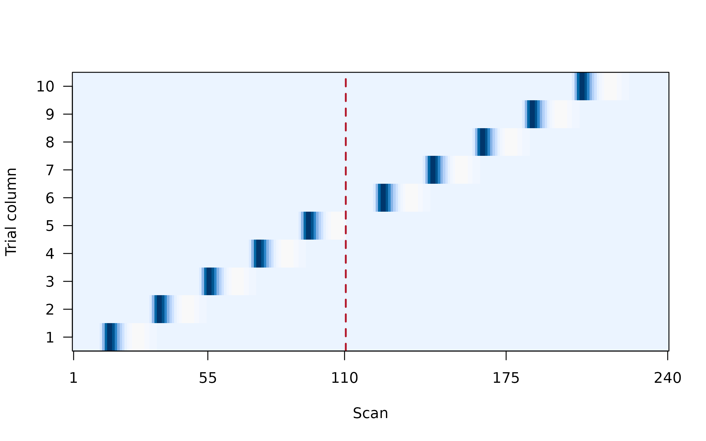
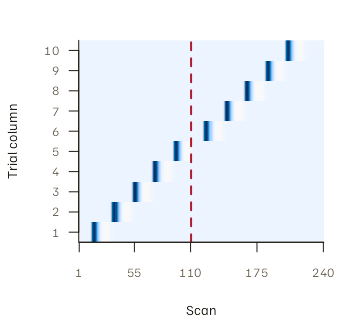

lss_design() fits LSS directly from
fmridesign event and baseline models using the OASIS
backend. Use it when event onsets are relative to each run, baseline
terms differ by run, or additional event terms must be retained in every
trial model. Read vignette("fmrilss") and
vignette("oasis_method") first for the matrix interface and
OASIS options.
This article requires the suggested fmridesign package.
Load the three packages used below before copying the workflow into a
fresh session.
How event and baseline terms enter the model
| Question | Answer |
|---|---|
| Which columns become LSS targets? | Exactly one trialwise event term |
| What happens to other event terms? | They are fixed common regressors, not extra trials |
| How are baseline terms mapped? | drift + block and the fixed RT_c event column go to Z; nuisance is projected as Nuisance |
| What does multi-basis output mean? | K coefficient rows per trial, in trial-major order |
The function requires exactly one trialwise event term. A parametric or condition-level event term can accompany it, but that term is part of every trial’s common design. It does not create another set of trial targets.
Start from a two-run event table
Onsets are relative to the start of each run. Here, the same five
onset times occur in both runs; the run column supplies
their distinct identities.
set.seed(20260821)
run_lengths <- c(110L, 130L)
TR <- 1
sframe <- sampling_frame(blocklens = run_lengths, TR = TR)
events <- data.frame(
event_id = seq_len(10L),
onset = rep(c(10, 30, 50, 70, 90), times = 2),
run = rep(1:2, each = 5),
RT = seq(0.4, 0.9, length.out = 10)
)
events$RT_c <- events$RT - mean(events$RT)
events
#> event_id onset run RT RT_c
#> 1 1 10 1 0.4000000 -0.25000000
#> 2 2 30 1 0.4555556 -0.19444444
#> 3 3 50 1 0.5111111 -0.13888889
#> 4 4 70 1 0.5666667 -0.08333333
#> 5 5 90 1 0.6222222 -0.02777778
#> 6 6 10 2 0.6777778 0.02777778
#> 7 7 30 2 0.7333333 0.08333333
#> 8 8 50 2 0.7888889 0.13888889
#> 9 9 70 2 0.8444444 0.19444444
#> 10 10 90 2 0.9000000 0.25000000Build one trialwise target term and one reaction-time (RT) event
term. The RT term is a common regressor: it adjusts every LSS model for
RT-related amplitude modulation, but lss_design() does not
report a trial beta for it.
emod <- event_model(
onset ~ trialwise(basis = "spmg1") + hrf(RT_c),
data = events,
block = ~run,
sampling_frame = sframe
)
event_dm <- design_matrix(emod)
event_meta <- attr(event_dm, "col_metadata")
table(event_meta$term_tag)
#>
#> RT_c trial
#> 1 10The ten trial columns are the LSS targets; the one
RT_c column is a fixed common regressor.
lss_design() uses the design metadata and stable column
identities rather than assuming that columns arrived in a particular
order.
Check that trial regressors stay within their run
The target matrix is block diagonal by run: trial columns 1–5 are zero in run 2, and trial columns 6–10 are zero in run 1.
| Check | Maximum_absolute_design_value |
|---|---|
| run-1 trials inside run 2 | 0 |
| run-2 trials inside run 1 | 0 |


The trialwise design is block diagonal by run; the vertical line marks the boundary after scan 110.
Add a structured baseline
baseline_model() keeps run intercepts, drift, and
nuisance inputs attached to the same sampling frame. The example uses
two synthetic motion columns per run.
motion <- list(
matrix(rnorm(run_lengths[1] * 2, sd = 0.15), run_lengths[1], 2),
matrix(rnorm(run_lengths[2] * 2, sd = 0.15), run_lengths[2], 2)
)
bmodel <- baseline_model(
basis = "poly",
degree = 1,
sframe = sframe,
intercept = "runwise",
nuisance_list = motion
)
baseline_terms <- term_matrices(bmodel)
vapply(baseline_terms, ncol, integer(1))
#> drift block nuisance
#> 2 2 4The adapter sends drift and block to
Z, sends nuisance to Nuisance,
and appends the fixed RT_c event column to Z.
If no baseline model is supplied, it inserts run-wise intercepts
instead.
Fit and check every trial against a full GLM
The simulation below is correctly specified for every LSS model: target trials share a coefficient within each voxel, while drift, run intercepts, motion, and the RT modulator all have their own common coefficients. This lets us check that the adapter constructs the intended models; it does not establish recovery for designs with arbitrary trial effects.
The default OASIS configuration applies a ridge penalty. When the goal is ordinary (unpenalized) LSS, set the ridge to zero explicitly, as here.
fit <- lss_design(
Y,
emod,
bmodel,
method = "oasis",
oasis = oasis_options(
ridge_mode = "absolute",
ridge_x = 0,
ridge_b = 0
),
validate = FALSE
)
dim(fit)
#> [1] 10 4
fit[1:4, ]
#> Voxel_1 Voxel_2 Voxel_3
#> trial_.trial_factor.length.onsets...01 0.8588198 1.7142706 0.2521402
#> trial_.trial_factor.length.onsets...02 -1.0983198 1.2285833 -3.0476933
#> trial_.trial_factor.length.onsets...03 -4.7123311 1.7288773 5.1002103
#> trial_.trial_factor.length.onsets...04 3.7497051 -0.9466139 -4.1816692
#> Voxel_4
#> trial_.trial_factor.length.onsets...01 4.100424
#> trial_.trial_factor.length.onsets...02 -3.187782
#> trial_.trial_factor.length.onsets...03 0.736539
#> trial_.trial_factor.length.onsets...04 5.679483validate = FALSE skips the adapter’s optional checks:
the sampling-frame and row-count checks described under Validation
below, and a warning based on the condition number of the full assembled
design. The mandatory trial/basis identity mapping still runs. The full
design contains RT_c as a weighted sum of the trial
columns, so the matrix used for that screening is rank deficient, even
though each target-specific LSS model below is full rank. A separate
check fits each target’s design as an ordinary GLM and compares every
returned coefficient with lss_design().
| Maximum_absolute_error | Minimum_target_model_rank | Target_model_columns |
|---|---|---|
| 0 | 11 | 11 |
Agreement with the direct fits confirms, for this example, that the RT event term and baseline nuisance regressors entered the intended models without creating extra trial rows.
Decide whether other-trial effects are pooled across runs
Placing onsets within runs does not make the default coefficient
estimator run-local. A single lss_design() call passes all
target columns to one OASIS fit, and in that fit the other-trial
regressor (the sum of all non-target trials) includes trials from both
runs. A run-1 trial’s estimate can therefore change when the run-2
response changes. This reflects a pooled multi-run estimand (the
quantity the model is defined to estimate), not leakage in the event
convolution.
For run-local coefficients, fit each run with its own event and
baseline models. Each run’s fit numbers its trials from 1, so before
combining rows, restore the global event identifiers in both the row
names and the trial/basis map. The two helpers below do exactly that:
fit_one_run() fits one run and relabels its rows, and
combine_run_fits() stacks the runs. The optional
global_source_columns records each event’s column in the
full multi-run design; here it comes from the joint fit above.
fit_one_run <- function(response, run, global_source_columns = NULL) {
scan_start <- sum(run_lengths[seq_len(run - 1L)]) + 1L
scan_rows <- scan_start:(scan_start + run_lengths[run] - 1L)
events_run <- events[events$run == run, , drop = FALSE]
events_run$run <- 1L
sframe_run <- sampling_frame(blocklens = run_lengths[run], TR = TR)
emod_run <- event_model(
onset ~ trialwise(basis = "spmg1") + hrf(RT_c),
data = events_run,
block = ~run,
sampling_frame = sframe_run
)
bmodel_run <- baseline_model(
basis = "poly",
degree = 1,
sframe = sframe_run,
intercept = "runwise",
nuisance_list = list(motion[[run]])
)
beta_run <- lss_design(
response[scan_rows, , drop = FALSE],
emod_run,
bmodel_run,
method = "oasis",
oasis = oasis_options(
ridge_mode = "absolute", ridge_x = 0, ridge_b = 0
),
validate = FALSE
)
# Keep the run-local labels, then switch the map and row names to the
# global event identifiers.
map_run <- attr(beta_run, "trial_basis_map")
map_run$local_trial <- map_run$trial
map_run$local_trial_name <- map_run$trial_name
map_run$local_source_column <- map_run$source_column
map_run$global_event_id <- events_run$event_id[map_run$trial]
map_run$run <- run
global_name <- sprintf(
"event_%02d_basis_%02d", map_run$global_event_id, map_run$basis
)
map_run$trial <- map_run$global_event_id
map_run$trial_name <- sprintf("event_%02d", map_run$global_event_id)
map_run$source_column <- if (is.null(global_source_columns)) {
NA_integer_
} else {
global_source_columns[map_run$global_event_id]
}
map_run$column <- global_name
map_run$name <- global_name
map_run$output_name <- global_name
rownames(beta_run) <- global_name
attr(beta_run, "trial_basis_map") <- map_run
list(beta = beta_run, map = map_run)
}
combine_run_fits <- function(parts) {
beta <- do.call(rbind, lapply(parts, `[[`, "beta"))
map <- do.call(rbind, lapply(parts, `[[`, "map"))
rownames(map) <- NULL
map$output_row <- seq_len(nrow(map))
attr(beta, "trial_basis_map") <- map
beta
}
joint_source_columns <- attr(fit, "trial_basis_map")$source_column
local_fit <- combine_run_fits(lapply(seq_along(run_lengths), function(run) {
fit_one_run(Y, run, joint_source_columns)
}))
attr(local_fit, "trial_basis_map")[
, c("output_row", "run", "local_trial", "trial", "trial_name")
]
#> output_row run local_trial trial trial_name
#> 1 1 1 1 1 event_01
#> 2 2 1 2 2 event_02
#> 3 3 1 3 3 event_03
#> 4 4 1 4 4 event_04
#> 5 5 1 5 5 event_05
#> 6 6 2 1 6 event_06
#> 7 7 2 2 7 event_07
#> 8 8 2 3 8 event_08
#> 9 9 2 4 9 event_09
#> 10 10 2 5 10 event_10The next check adds signal to run 2 only. The run-1 coefficients change in the single joint fit but stay the same in the run-local fits.
| Estimator | Maximum_change_in_run1_beta |
|---|---|
| one pooled two-run fit | 13.83231 |
| two separate run fits | 0.00000 |
Use one joint call only when cross-run pooling is the LSS model you intend. Run-specific prewhitening does not by itself change the pooled other-trial estimand.
Identify output rows with the trial/basis map
The result carries the event model, baseline model, sampling frame, and an explicit trial/basis map as attributes. To find which trial a row belongs to, use the map or the row names; do not infer it from a presumed source-column order.
attributes_kept <- c(
event_model = !is.null(attr(fit, "event_model")),
baseline_model = !is.null(attr(fit, "baseline_model")),
sampling_frame = !is.null(attr(fit, "sampling_frame")),
trial_basis_map = !is.null(attr(fit, "trial_basis_map"))
)
attributes_kept
#> event_model baseline_model sampling_frame trial_basis_map
#> TRUE TRUE TRUE TRUE
identity_map <- attr(fit, "trial_basis_map")
stopifnot(identical(identity_map$trial, events$event_id))
identity_map$input_event_id <- events$event_id
identity_map[1:3, c("input_event_id", "trial", "basis", "output_row")]
#> input_event_id trial basis output_row
#> 1 1 1 1 1
#> 2 2 2 1 2
#> 3 3 3 1 3Multi-basis designs return coefficients, not amplitudes
With SPMG3, lss_design() detects three basis columns per
trial and returns three consecutive rows per trial, with basis
coefficients ordered within each trial. The next simulation is correctly
specified in that three-dimensional basis and is checked against
independent full GLMs.
fit_spmg3 <- lss_design(
Y_spmg3,
emod_spmg3,
method = "oasis",
oasis = oasis_options(
ridge_mode = "absolute",
ridge_x = 0,
ridge_b = 0
),
validate = FALSE
)
c(rows = nrow(fit_spmg3), trials = n_trials, basis_dimension = K)
#> rows trials basis_dimension
#> 30 10 3
rownames(fit_spmg3)[1:6]
#> [1] "trial_.trial_factor.length.onsets...01:basis_1"
#> [2] "trial_.trial_factor.length.onsets...01:basis_2"
#> [3] "trial_.trial_factor.length.onsets...01:basis_3"
#> [4] "trial_.trial_factor.length.onsets...02:basis_1"
#> [5] "trial_.trial_factor.length.onsets...02:basis_2"
#> [6] "trial_.trial_factor.length.onsets...02:basis_3"
attr(fit_spmg3, "trial_basis_map")[
1:6, c("trial", "basis", "source_column", "output_row")
]
#> trial basis source_column output_row
#> 1 1 1 1 1
#> 2 1 2 2 2
#> 3 1 3 3 3
#> 4 2 1 4 4
#> 5 2 2 5 5
#> 6 2 3 6 6| Maximum_absolute_error |
|---|
| 0 |
Each trial now has canonical, temporal-derivative, and dispersion-derivative coefficients. The canonical coefficient alone is not a normalized response amplitude. Keep all three rows unless a separately defined shape and amplitude estimand justifies a reduction.
Ridge, standard errors, and whitening
The same OASIS options and restrictions apply through
lss_design():
-
oasis_options()uses fractional ridge by default. -
return_se = TRUErequires zero ridge, a fixed full-rank design, positive residual degrees of freedom, and no estimated prewhitening. - A non-trial event term remains common whether or not ridge is used.
For multiple runs, whitening needs scan-level segmentation.
lss_design() infers it from the sampling frame. The
explicit vector below is equivalent and shows the required scan-level
labels. If supplied, it must encode the same boundaries. The event
model’s blockids describe events, not scans, so do not pass
that shorter vector as prewhiten$runs.
scan_run <- rep(seq_along(run_lengths), times = run_lengths)
fit_whitened <- lss_design(
Y,
emod,
bmodel,
method = "oasis",
oasis = oasis_options(),
prewhiten = prewhiten_options(
method = "ar",
p = 1,
pooling = "run",
runs = scan_run
)
)AR(1) illustrates the interface. Choose the noise model from residual diagnostics for your dataset. Shared-design OASIS calls reject voxel- or parcel-specific whitening operators because those require correspondingly voxel- or parcel-specific filtered designs.
Validation and failure modes
With validate = TRUE, lss_design() checks
that the time dimensions and sampling frames agree. It also computes a
scale-dependent condition number for the full assembled design and emits
a warning only when that number exceeds 30 and the effective ridge
penalties are all zero. With diagnostics = TRUE,
attr(result, "diagnostics") additionally records the full
input design’s SVD rank and condition number before whitening, zero
columns, trial/basis and voxel mappings, and nonfinite beta counts. No
trials or voxels are silently dropped. This opt-in attribute leaves the
ordinary matrix or list return value unchanged. Treat both the warning
and these input-design summaries as screening, not as a characterization
of every residualized LSS target model.
Before fitting, check the following:
-
nrow(Y)must equalsum(blocklens(sframe)). - The event and baseline models must use the same sampling frame.
- Multi-basis metadata must agree with the HRF basis dimension.
- Parametric and condition-level terms are fixed regressors; they are not additional trialwise targets.
Next steps
-
vignette("voxel-wise-hrf")— normalized voxel-specific HRF shapes -
vignette("sbhm")— library-constrained voxel-specific HRFs